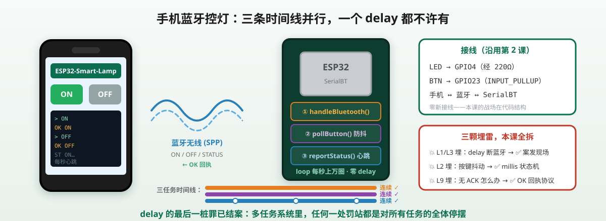

阶段四 · 无线物联 ｜ 难度：★★★★★ ｜ 预计用时：60 分钟（本课是全系列"回收之王"）
本课材料：ESP32 开发板 ×1、USB 线 ×1、面包板、LED（GPIO4 经 220Ω）×1、按钮（GPIO23）×1、杜邦线（沿用第 2 课接线） 无硬件替代：Wokwi 无法模拟蓝牙射频——本课代码在 Wokwi 里跑"串口模拟版"验证逻辑，真机蓝牙部分按文档用手机实测

你将做出：手机装个蓝牙串口 App，点"开"板上的灯就亮、点"关"就灭；同时板子每秒把状态回传到手机。而按钮、LED、蓝牙三条任务在同一个
loop()里互不打架——这正是第 3 课埋下的"非阻塞"在 7 课之后的完全体。
这一课是全系列的清算日（第二大清算，第一是第 6 课引脚）。到目前为止你欠了三笔账：
| # | 悬案 | 埋于 | 本课 |
|---|---|---|---|
| 1 | delay 会把蓝牙搞断线 | 第 1 课预告 + 第 3 课扔掉一半 + 第 3 课挑战 4 证据 | ✅ 案发现场重演 |
| 2 | 按键抖动的优雅根治 | 第 1 课预告 + 第 2 课目击现场 | ✅ millis 防抖完全体 |
| 3 | "帧与校验"到底有什么用 | 第 9 课 SPI 无 ACK 的沉默 | ✅ 蓝牙数据包实战 |
本课学习目标（完成后你将拥有）：
BluetoothSerial SPP 透传）的基本用法：广播、连接、收发（兼辨析经典蓝牙与 BLE）delay(300) 的正统接班人）ON/OFF 这种文本帧 + 校验的实战意义先看你本课要同时维持的三条时间线：
loop() 每一圈要照顾：
① 蓝牙：手机发来的字节到了吗？到了处理（不能漏）
② 按钮：现在是按下吗？按下要防抖确认（不能误触发）
③ LED：该亮该灭，状态要跟上（不能卡顿）
第 3 课你学会"一条时间线用 millis"；第 4 课试过"两条"；本课是三条并行的完全体——因为只要其中一条用 delay，另外两条立刻遭殃。蓝牙最娇气，它会第一个出事给你看。
ESP32（经典 WROOM-32）内置两种蓝牙：经典蓝牙（BR/EDR，支持 SPP 串口透传） 和 BLE（Bluetooth Low Energy，低功耗蓝牙）。本课主角是 BluetoothSerial（SerialBT，经典蓝牙 SPP）——在手机 App 或电脑蓝牙端口和板子之间拉一条"虚拟串口线"，代码写起来和第 5 课的 Serial 几乎一模一样：
手机 App（Serial Bluetooth Terminal）/ 电脑蓝牙串口
⚡ 蓝牙 SPP 无线连接
ESP32 BluetoothSerial（SerialBT）
💡 经典蓝牙 SPP vs BLE 怎么选？（避坑必看）
BluetoothSerial（经典蓝牙 SPP，本课主代码）：API 与Serial完全一致，学习成本最低；Android 手机与 Windows/macOS 电脑原生支持，装个"蓝牙串口终端"即可直连。- ⚠️ iPhone（iOS）用户注意：苹果限制了非 MFi 认证的经典蓝牙 SPP，iPhone 蓝牙列表搜不到
SerialBT！如果你只有 iPhone，请用电脑蓝牙连接测试，或直接看文末【挑战 4】切到BLEDevice（Nordic UART BLE 透传，iOS 免认证原生支持，用 LightBlue / nRF Connect 即可收发）。- 芯片变体提示：ESP32-C3 / ESP32-S3 仅支持 BLE（无经典蓝牙），若用这两款板子也请走
BLEDevice路线。
第 3 课挑战 4 你做过一次"证据收集"（delay 版读按钮）。现在把案发现场升级到蓝牙——先写"直觉版"代码：
// ❌ 直觉版（反面教材）：delay 混进多任务
void loop() {
// 任务① 蓝牙收发
if (SerialBT.available()) {
char c = SerialBT.read();
if (c == '1') digitalWrite(LED_PIN, HIGH);
if (c == '0') digitalWrite(LED_PIN, LOW);
SerialBT.println("收到");
}
// 任务② 按钮检测（第 2 课写法）
if (digitalRead(BTN_PIN) == LOW) {
digitalWrite(LED_PIN, !digitalRead(LED_PIN));
delay(300); // 防抖 + 等松手 ← 看似无害
}
// 任务③ LED 状态回传
if (millis() - lastReport >= 1000) {
lastReport = millis();
SerialBT.print("状态: ");
SerialBT.println(digitalRead(LED_PIN));
}
}
看起来很正常，对吧？ 现在做这个实验（或在脑子里跑一遍）：
连按手机上的"开→关→开→关"快速四下，同时手指连按板上按钮三下 ——然后观察：
- 手机上"收到"的回执慢半拍、丢好几条
- 每次按钮按下的 300ms 里，手机发什么都没反应
- 状态回传的节奏一卡一卡
凶手链（把第 3 课的证据接上）：
按钮按下 → delay(300) 原地罚站
→ loop 停转 300ms
→ SerialBT.available() 没人查 → 手机数据堆在缓冲区
→ BLE 连接事件处理延迟 → 手机感觉"卡/丢包"
→ 状态回传错过时间点 → 节奏乱
🔑 delay 的最后一桩罪，也是最大的一桩： 在多任务系统里，任何一个任务里的 delay 都是对所有其他任务的"全体罚站"。 单任务时 delay 只是慢（第 3 课），多任务时 delay 是丢数据、卡连接、失响应的元凶。
第 3 课你扔掉了呼吸灯里的 delay，那是"为了好看"；本课你扔掉按钮里的 delay，是为了"系统能活着"——非阻塞从技巧变成了刚需。
delay 版：每次按钮按下，三条线同时被红色罚站段切断——蓝牙丢包、心跳卡顿；millis 版：三条线各自连续，按钮事件只是"多执行了几圈"。第 3 课扔的是呼吸灯的 delay，本课扔的是按钮的 delay——后者才是断蓝牙的真凶。
上图切换"delay 版 / millis 版"，看三条任务时间线的命运：delay 版里绿、蓝两条线被红色罚站段反复切断；millis 版三条线各自连续。
第 2 课的 delay(300) 防抖能用，但它有两个罪：罚站（本课刚清算）+ 等松手逻辑粗糙。现在升级成 millis 状态机防抖：
// ✅ millis 防抖：三行核心逻辑
const unsigned long DEBOUNCE_MS = 25; // 稳定 25ms 才算真按下
int lastRaw = HIGH; // 上一次原始读数（INPUT_PULLUP 松开=HIGH）
int stableState = HIGH; // 稳定状态
unsigned long lastChangeTime = 0; // 原始电平变化的时刻
void pollButton() {
int raw = digitalRead(BTN_PIN); // ① 现在的原始值
if (raw != lastRaw) { // ② 电平变了？
lastRaw = raw;
lastChangeTime = millis(); // ③ 重新计时
}
if (millis() - lastChangeTime >= DEBOUNCE_MS // ④ 稳定超过 25ms？
&& raw != stableState) {
stableState = raw; // ⑤ 才更新稳定状态
if (stableState == LOW) { // ⑥ 确认按下（下降沿）
ledOn = !ledOn; // 同步翻转状态变量
digitalWrite(LED_PIN, ledOn ? HIGH : LOW); // 执行动作
SerialBT.println(ledOn ? "BTN ON" : "BTN OFF");
}
}
// ⑦ 全程零等待——其他任务永远畅通
}
原理一句话：抖动的特征是"电平在 25ms 内反复横跳"——所以只要电平一变就重置计时器，必须连续稳定 25ms 不变才承认。抖动永远无法"稳定"，自然被过滤。
📌 和第 2 课的
delay(300)对比：
delay(300) 防抖 millis 状态机防抖 阻塞 ❌ 罚站 300ms ✅ 零等待 误触发 偶尔（毛刺刚好在窗口外） 极少（要求持续稳定） 连击支持 ❌ 必须等松手 ✅ 可配置（松开触发/按下触发） 多任务 ❌ 拖垮全循环 ✅ 与其他任务并行 这就是"按键抖动"这颗埋了 8 课的雷的最终拆法。 第 2 课的写法是"新手能跑"，本课的写法是"工程能用"——以后所有输入（编码器、触摸、限位开关）都套这个模板。
// ============================================
// 第 10 课：蓝牙控制 + millis 完全体三任务
// ============================================
#include <BluetoothSerial.h>
const int LED_PIN = 4;
const int BTN_PIN = 23; // INPUT_PULLUP，接 GND
#if !defined(CONFIG_BT_ENABLED) || !defined(CONFIG_BLUEDROID_ENABLED)
#error "蓝牙未启用！请在板型选项里确认（ESP32 Dev Module 默认开启）"
#endif
BluetoothSerial SerialBT;
// —— 任务① 蓝牙状态回传的节奏 ——
unsigned long lastReport = 0;
const unsigned long REPORT_MS = 1000;
// —— 任务② 按钮防抖状态机 ——
int lastRaw = HIGH;
int stableState = HIGH;
unsigned long lastChangeTime = 0;
const unsigned long DEBOUNCE_MS = 25;
// —— 任务③ LED 状态 ——
bool ledOn = false;
void setup() {
pinMode(LED_PIN, OUTPUT);
pinMode(BTN_PIN, INPUT_PULLUP); // 第 2 课的知识：默认上拉
Serial.begin(115200);
SerialBT.begin("ESP32-Smart-Lamp"); // ① 广播名，手机搜这个
Serial.println("蓝牙已启动，搜 'ESP32-Smart-Lamp'");
}
void pollButton() {
int raw = digitalRead(BTN_PIN);
if (raw != lastRaw) {
lastRaw = raw;
lastChangeTime = millis();
}
if (millis() - lastChangeTime >= DEBOUNCE_MS && raw != stableState) {
stableState = raw;
if (stableState == LOW) {
ledOn = !ledOn;
digitalWrite(LED_PIN, ledOn ? HIGH : LOW);
SerialBT.println(ledOn ? "BTN ON" : "BTN OFF");
Serial.println(ledOn ? "本地按钮 -> ON" : "本地按钮 -> OFF");
}
}
}
void handleBluetooth() {
if (!SerialBT.available()) return; // 没数据，立刻走人（非阻塞）
String cmd = SerialBT.readStringUntil('\n'); // 读到换行为止
cmd.trim(); // 清洗（第 5 课习惯）
if (cmd.length() == 0) return;
// —— 消息协议：只认白名单命令（第 9 课"帧"的实战）——
if (cmd == "ON") { ledOn = true; }
else if (cmd == "OFF") { ledOn = false; }
else if (cmd == "STATUS") {
SerialBT.println(ledOn ? "ST ON" : "ST OFF");
return; // 仅查询状态，直接回传后退出
}
else { SerialBT.println("ERR unknown"); return; } // 未知命令报错
digitalWrite(LED_PIN, ledOn ? HIGH : LOW);
SerialBT.println(ledOn ? "OK ON" : "OK OFF"); // 每条命令都有回执
}
void reportStatus() {
if (millis() - lastReport < REPORT_MS) return; // 没到点，走人
lastReport = millis();
SerialBT.print("ST ");
SerialBT.println(ledOn ? "ON" : "OFF"); // 周期心跳
}
void loop() {
handleBluetooth(); // ① 蓝牙：随时查，查不到立刻返回
pollButton(); // ② 按钮：防抖状态机，零等待
reportStatus(); // ③ 心跳：millis 节奏
// —— 三条时间线并行，loop 每秒转成千上万圈 ——
}
SerialBT.begin("ESP32-Smart-Lamp")
启动蓝牙串口并广播设备名。手机装"蓝牙串口（Bluetooth Serial Terminal）"类 App，搜索这个名字配对（多数 SPP App 无需密码，有的要 1234）。这就是"无线数据线"的插头时刻。
if (!SerialBT.available()) return;——非阻塞收发的骨架
和第 5 课 Serial2.available() 同一个思想：没数据不等待，直接退出函数让 loop 转下一圈。整个 handleBluetooth 没有一处会停下——这是 delay 版做不到的根本原因。
消息协议：ON/OFF/STATUS + 回执 OK/ERR
第 9 课说"SPI 没有 ACK，上层必须自己加确认机制"——这里就是那个机制的最小形态：
手机 → "ON\n" → 板子
手机 ← "OK ON\n" ← 板子 （收到并执行的回执）
手机 → "XYZ\n" → 板子
手机 ← "ERR unknown" ← 板子 （白名单外的命令被拒）
💡 为什么文本命令 + 回执是好设计？ ①人眼能读，串口/App 里直接看懂 ②每条命令有应答，丢包能发现（没收到回执就重发）③白名单校验，乱数据进不来。这是从"裸字节流"（第 5 课 UART）到"有协议的通信"的关键一跃——MQTT（第 12 课）会把这个思想放大到云端。
reportStatus() 的心跳
每秒一条 ST ON —— 心跳（Heartbeat） 是所有远程系统的标配：让对端知道"我还活着、状态是什么"。手机 App 断线重连后，靠心跳立即恢复画面状态。
三条任务并行的结构
loop() 里三个函数都是"到点才干活、没到点立刻返回"——loop 转得飞快，三条时间线谁也不等谁。这就是第 3 课埋下的心智模型的完全体：从"扔掉一个 delay"到"整个系统里一个 delay 都没有"（唯一的例外还是初始化失败死等——和第 7 课一样）。
ESP32-Smart-Lamp 并配对连接成功ON → 灯亮 + 收到 OK ON；发 OFF → 灯灭 + OK OFFXYZ → 收到 ERR unknown（白名单生效）ST ON/OFF 心跳，节奏稳定不卡ON OFF ON OFF... 同时连按板上按钮——三者全部正常响应，无丢命令、无卡顿pollButton() 里改回 delay(300)，重跑压力测试——亲眼看到蓝牙卡顿丢包（案发现场重演成功）OK 回执全部打勾 → 你完成了嵌入式编程最重要的思维转变，三颗埋了 8 课的雷全部拆除。进入第 11 课，把这套本事接到 Wi-Fi 上。
BLINK 500——板子以 500ms 间隔闪 5 次后自动停（用 millis 写闪烁状态，不许 delay）。解析 cmd.substring(6) 拿参数。EVT BTN（事件推送）——体会"周期心跳"与"事件推送"两种消息模式。raw 的每次变化打印出来（Serial.println(raw)），按一下按钮看一串 0/1 横跳——直观看到"抖动长什么样"，对照第 2 课目击现场。SerialBT 换成官方 BLEDevice 库的 UART Service（Nordic UART UUID），对比两套 API——理解"串口透传"只是一个服务（Service）+ 特征（Characteristic），第 12 课 MQTT 的"主题"概念会与此呼应。SerialBT 的行为——这是"无线链路不可靠"的第一手证据，第 11、12 课的断线重连设计会引用它。| 现象 / 报错关键词 | 原因 | 解决办法 |
|---|---|---|
编译报错 蓝牙未启用 / CONFIG_BT_ENABLED |
板型选错（如选了无经典蓝牙的 C3/S3 或非 ESP32 板） | 工具 → 开发板选 ESP32 Dev Module；C3/S3 请用 BLEDevice |
| 手机搜不到设备 | ① 用的是 iPhone（iOS 不支持经典蓝牙 SPP）② 已连其他设备 ③ 代码未跑起 | Android 装 Serial Bluetooth Terminal，或用电脑蓝牙连；iPhone 走挑战 4 的 BLE |
| 配对成功但发命令无反应 | ① App 不是 SPP 串口模式 ② 换行符没发（协议用 \n 分帧） |
换"蓝牙串口终端"类 App；设置里勾选"追加换行/CRLF" |
灯受控但没有 OK 回执 |
App 没开"接收显示" | 开启 App 的接收窗口 |
| 压力测试丢命令 | ① 用了 delay 版（本课反面教材）② readStringUntil 超时太长 |
确认三任务全是非阻塞；命令频率降一档再测 |
| 按钮连击只触发一次 | 防抖窗口太大 / 等松手逻辑残留 | DEBOUNCE_MS 改 15–25；确认用的是状态机版 |
| 按钮一次按下触发多次 | 没防抖或窗口太小 | 确认 pollButton 状态机在跑；25ms 起步 |
| 心跳节奏一卡一卡 | 循环里藏着阻塞（delay/长 print） |
全文搜 delay(，只许初始化死等处出现 |
| 蓝牙连上后复位才恢复 | 正常现象：复位会断链 | App 自动重连，或代码里做连接检测（挑战 5 观察） |
SerialBT 与 Serial 输出混在一起 |
共用变量/没区分通道 | 调试走 Serial，业务走 SerialBT（第 5 课"带外管理"） |
蓝牙只能"十米内点对点"。第 11 课：Wi-Fi 与 Web 服务器——ESP32 连上你家路由器，手机浏览器打开一个网页就能控灯，无需装任何 App。你会学到 STA/AP 两种联网模式、HTTP 请求的最小闭环，并第一次面对"网络世界的新敌人"：客户端随时可能断开、请求可能来一半——本课的三任务非阻塞结构，正是为它准备的地基。同时第 6 课的"ADC2 与 Wi-Fi 冲突"伏笔将正式引爆：开 Wi-Fi 后，模拟输入必须全在 ADC1。
本课程系列：从点亮一盏灯，到设计一台会自己思考的机器。